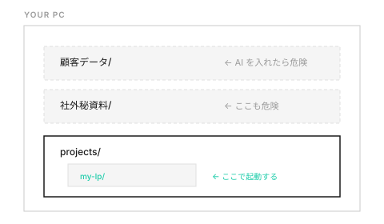

SESSION 02
PCの裏側を知ろう
今日のゴール
「ターミナルが何をする場所か」「Claude Codeが自分のPC上で何をしているか」を理解する
前回の宿題確認（5分）
チャットAIに聞いてみた結果を2〜3人にシェアしてもらう
2-1
ターミナルとは
15分ターミナルを開いて、参加者に「これ、見たことあります？」と聞く。
GUIとの対比
【普段のやり方】 【ターミナルで同じこと】 フォルダをダブルクリック → cd my-project ファイル一覧を見る → ls 新しいフォルダを作る → mkdir new-folder ファイルを削除 → rm file.txt
やっていることは同じ。マウスの代わりに文字で命令するだけ。
ハンズオン（5分）
1. ターミナルを開く（Macなら「ターミナル」アプリ） 2. pwd と打つ → 今いる場所が表示される 3. ls と打つ → ファイル一覧が表示される 4. mkdir test-folder と打つ → フォルダが作られる 5. ls でもう一度確認 → test-folder が増えている！
意外と知られていないこと
ターミナルでできること: - ファイルのダウンロード（curl） - ソフトのインストール（brew install） - サーバーの起動（npx serve） - GitHubへのアップロード（git push）
ポイント
ターミナルはほぼ何でもできる。AIエージェントがターミナルを使うということは、AIがこれら全部できるということ。だから「何をしていいか」を管理する必要がある。
2-2
「実行する（Run）」と「止める」
5分実行 = プログラムを動かすこと node app.js ← これで app.js が動く 止める = Ctrl + C サーバーを起動したとき、画面が止まって見える。 それは動き続けているだけ。Ctrl + C で止められる。
「実行したけど画面が固まった！」はよくある質問。壊れたのではなく、動き続けているだけ。
2-3
Homebrew・PATH・bin
10分深入りしすぎず、「こういう仕組みがある」と知っておくレベルでOK。
Homebrew = ターミナル版のApp Store → brew install node で道具をインストールできる bin = 道具置き場 → インストールした道具は /usr/local/bin/ に置かれる PATH = 道具の探し方リスト → ターミナルで claude と打つと、PATHの場所を順番に探す → 見つからないと「command not found」エラーになる
覚えなくてOK
でもトラブルが起きたとき「あ、PATHの問題かも」と思えるだけで対応が変わる。
2-4
Claude Codeはどこで何をしているのか
15分第2回の核心パート。

3つのポイント
- AIが触るファイルは、あなたのPCの中にある
- AIの頭脳はAnthropicのサーバーにある
- AIに見せた情報はインターネット経由で送信される
作業フォルダ

重要
Claude Codeは起動したフォルダの中で動く。「AIに触らせていいファイルだけが入ったフォルダ」で起動する。これが一番基本のセキュリティ。
2-5
APIとは？
5分チャットAI = レストランで食事 → お店に行って、注文して、その場で食べる Claude Code = 出前 → キッチン（PC）から電話（API）して料理（回答）を届けてもらう → 届いた料理を自分で好きにアレンジできる
APIキー = 出前の会員番号。漏れたら他人に使われて課金される。パスワードと同じ扱い。
2-6
振り返りクイズ
5分Q1: ターミナルの ls コマンドは何をする？
A: ファイルの一覧を表示する（FinderやExplorerで中身を見るのと同じ）
Q2: Claude Codeを起動するとき、なぜ「作業フォルダ」が重要？
A: AIが触れるファイルの範囲が決まるから。顧客データが入ったフォルダで起動すると危険。
Q3: 「command not found」エラーが出たら何が起きている？
A: PATHに登録された場所にプログラムがない。PCが壊れたわけではない。
次回までの宿題
宿題① ターミナルで遊んでみよう
pwd ← 今いる場所を表示 ls ← ファイル一覧 cd Desktop ← デスクトップに移動 ls ← デスクトップの中身を確認 mkdir ai-test ← 「ai-test」フォルダを作る cd ai-test ← そのフォルダに入る pwd ← 場所が変わったことを確認
怖くない！ただの文字版Finder。うまくいかなくても大丈夫。エラーメッセージをスクショして持ってきて。
宿題② 「自分のPCのどこにAIを入れていいか」を考えよう
自分のPCのフォルダ構成を眺めて、「このフォルダならAIに触らせても安全だな」「このフォルダは絶対ダメだな」を1つずつ書き出してください。